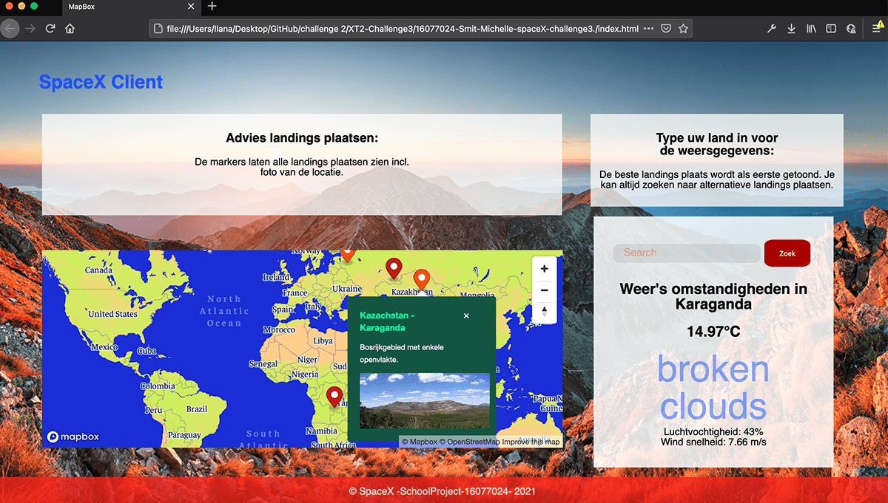
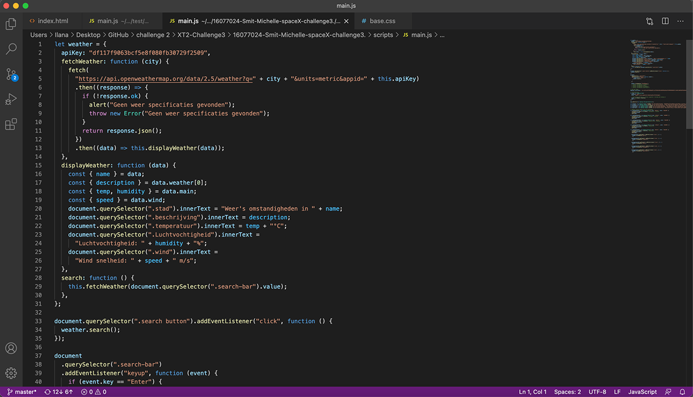
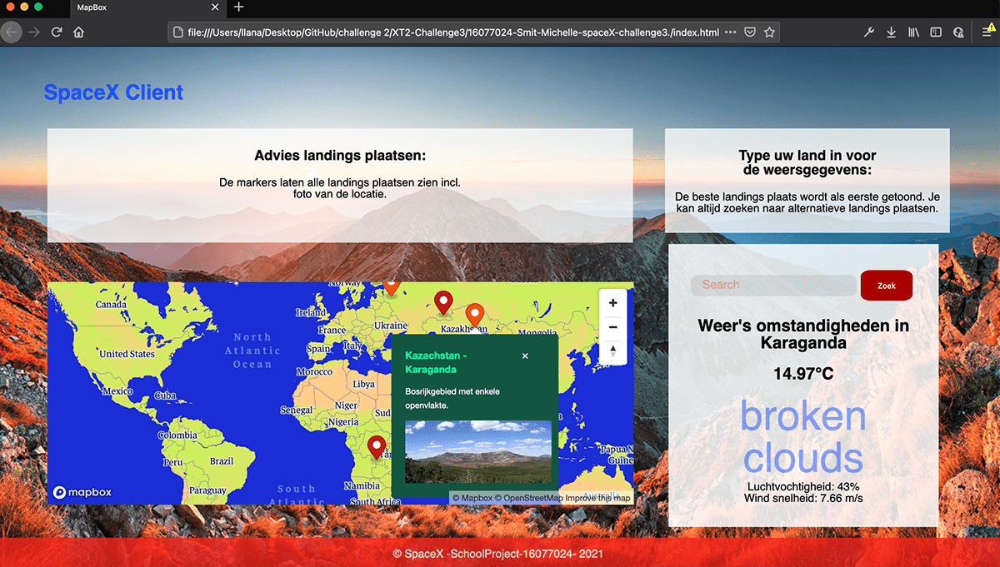
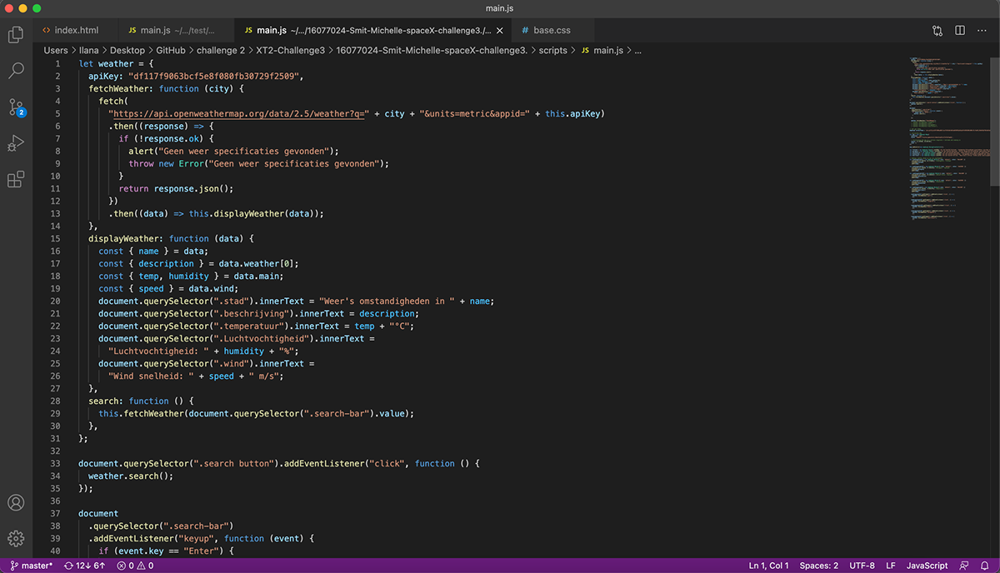

Js-Space-X
Over dit Project:
Dit project was bedoelt om JS beter onder de knie te krijgen. Er moest een website gemaakt worden waar een goede landings plaats wordt bepaald voor de SpaceX. Deze landingsplaats moest afgelegen zijn en de temperatuur, windsnelheid en temperatuur moeten inzichtelijke zijn voor de landing. Dit moest dan ook voldoen aan een API en MapBox.
In de mapBox heb ik een paar markers gezet die de landingsplaatsen aangeven. wanneer de marker aangedrukt wordt zal de temperatuur, windsnelheid en luchtvochtigheid in het vak aan de rechterkant worden weergegeven waardoor de plaatsen vergeleken kunenen worden. Ook is er de mogelijkheid om zelf een locatie in te voegen. Door deze mogelijkheiden maakt het de keuze op de juiste landingspaats groter en veiliger.
- Project soort: Single
- Doelgroep: Space X scientist
- Merk: Space X
- WerkTijd: 90 dagen
- Program's: Adobe XD, HTML, CSS, JS